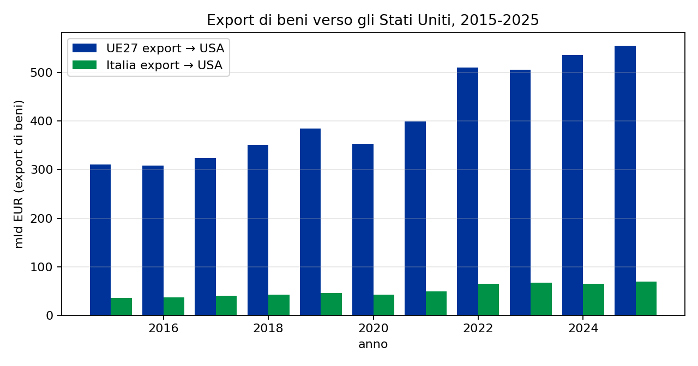
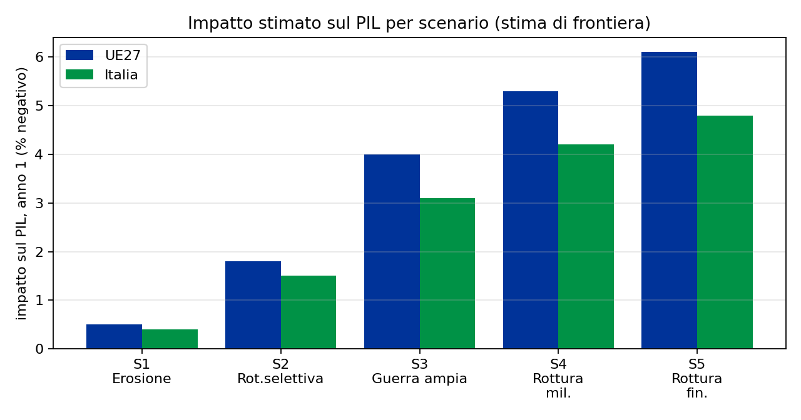

Se gli Stati Uniti interrompessero i rapporti con l’Unione europea
Scenario, strumenti, trigger e impatto di una rottura transatlantica
Paolo Volterra ![]()
Lo scenario in cui gli Stati Uniti interrompono i rapporti con l’Unione europea è raro ma non remoto: nel 2026 un alleato del G7 e della NATO, il Canada, è già in rottura commerciale aperta, gli strumenti giuridici sono stati usati e, secondo la stampa specializzata, la presenza militare americana in Europa è in ridimensionamento. Il documento definisce che cosa significherebbe “interruzione totale” (non un evento, ma un processo su sei canali), con quali strumenti giuridici si costruirebbe, quanto vale la relazione in gioco (beni, servizi, investimenti, finanza), quali segnali precoci la annuncerebbero e quanto costerebbe all’Europa e all’Italia. La conclusione è che il costo maggiore non è il dazio, ma la fine del dividendo di sicurezza e di prevedibilità, e che la probabilità più alta non è la catastrofe, ma la stabilizzazione in un equilibrio permanente di attrito.
Stati Uniti, Unione europea, dazi, sicurezza, frammentazione, Italia, Mezzogiorno
1 Perché studiare uno scenario estremo
Chiedere se gli Stati Uniti interromperanno i rapporti con l’Unione europea non è un esercizio accademico. Nel 2026 gli Stati Uniti hanno applicato dazi al 50% a un alleato del G7 e membro della NATO, il Canada, dopo il fallimento dei negoziati; hanno minacciato di alzare i dazi su otto Paesi europei per ottenere la Groenlandia; hanno annunciato, secondo la stampa specializzata, il ridimensionamento della presenza militare in Europa e hanno visto gli alleati europei rifiutare il sostegno a un’operazione nel Golfo. La domanda utile non è “accadrà?”, ma per quali canali, con quali strumenti, con quali effetti e con quali segnali precoci.
Questo documento non è una previsione. È una mappa: definisce che cosa significherebbe una rottura (si veda la Sezione 3), con quali strumenti giuridici si costruirebbe (Sezione 4), quanto vale la relazione in gioco (Sezione 5), quali sono i livelli dell’escalation (Sezione 7) e quanto costerebbe (Sezione 8). Distingue sempre tra fatti documentati, inferenze, ipotesi e giudizi, e segnala esplicitamente ciò che non è provato.
2 Il punto di partenza: dove stanno i rapporti al 2026
Il quadro commerciale poggia sull’accordo concluso a Turnberry il 27 luglio 2025 e formalizzato nella Joint Statement del 21 agosto 2025 [1]. Il framework è entrato in vigore il 1° luglio 2026, dopo l’approvazione del Parlamento europeo e del Consiglio [2]. Prevede un tetto tariffario americano del 15% sulla maggior parte delle esportazioni europee, l’eliminazione dei dazi europei residui sui beni industriali americani e l’apertura di contingenti per alcuni prodotti agroalimentari. L’Europa ha ottenuto alcuni guardrail: un meccanismo di sospensione delle preferenze, una scadenza — fine 2026 — entro cui gli Stati Uniti devono allineare al 15% i dazi su acciaio e alluminio derivati, e una clausola di tramonto al 2029 [3].
Il quadro è però fragile per un motivo giuridico decisivo. Il 20 febbraio 2026 la Corte Suprema degli Stati Uniti, nel caso Learning Resources, Inc. v. Trump, ha stabilito che l’International Emergency Economic Powers Act (IEEPA) non autorizza il Presidente a imporre dazi, perché il potere fiscale appartiene al Congresso [4]. I dazi “reciproci” sono caduti; l’amministrazione ha risposto con una sovrattassa globale del 10% fondata sulla Sezione 122 del Trade Act del 1974, scaduta poi a luglio per il limite statutario di 150 giorni. Restano in vigore i dazi settoriali basati sulla Sezione 232 (acciaio e alluminio al 50%) e sulla Sezione 301 [5], [6].
A questo si aggiunge una cornice geopolitica tesa: dall’inflazione energetica legata alla guerra con l’Iran, la Banca centrale europea ha rialzato i tassi nel 2026, portando il tasso di deposito dal 2,00% al 2,50% [7]. La Banca centrale europea stima in circa -0,7 punti percentuali cumulati tra 2025 e 2027 l’effetto del solo regime tariffario ordinario [8]: un attrito gestito, non una rottura.
3 Che cosa significherebbe “interruzione totale”
“Interrompere tutti i rapporti” non è un evento giuridico unico: è un fascio di atti su più canali, ciascuno con gradi di intensità e reversibilità. Va scomposto, altrimenti non è analizzabile. Sei canali contano:
- commerciale (merci, energia, materie prime critiche);
- servizi e digitale (cloud, ICT, proprietà intellettuale, piattaforme);
- tecnologia ed export control (semiconduttori, intelligenza artificiale, software);
- diplomatico-istituzionale (trattati, dialoghi, organizzazioni internazionali);
- sicurezza e difesa (NATO, basi, truppe, intelligence, armamenti);
- finanziario-monetario (dollaro, sistemi di pagamento, swap, asset, sanzioni).
Per ciascun canale si passa da un grado di normale cooperazione a uno di attrito, poi sospensione selettiva, rottura settoriale, rottura ampia e infine rottura totale. La finanza è raramente il primo canale usato, perché è il più autolesivo: gli investitori non americani detengono circa 30.000 miliardi di dollari di attività statunitensi. La logica è quella dell’interdipendenza armata [9]: chi controlla i nodi della rete — il regolamento in dollari, i semiconduttori, il cloud — può coercire; chi vi è immerso subisce.
4 Con quali strumenti si costruirebbe
Il vincolo del febbraio 2026 è centrale: una guerra commerciale generalizzata richiederebbe una legge del Congresso, perché la Corte Suprema ha tolto all’Esecutivo il potere tariffario globale. L’Esecutivo conserva però leve potenti e immediate.
Sul piano tariffario restano le Sezioni 232 (sicurezza nazionale, per settore), 301 (pratiche sleali), 338 (trattamento discriminatorio, con un tetto del 50% — l’arma usata contro il Canada) e 122 (squilibri di bilancia dei pagamenti, 15% per 150 giorni). Sul piano non tariffario — più rapido e meno vincolato — ci sono i controlli sulle esportazioni (ECRA/EAR, entity list, foreign direct product rule), il blocco dei trasferimenti di armi (AECA/ITAR) e le sanzioni finanziarie dell’OFAC, che l’IEEPA continua ad autorizzare anche dopo la sentenza. Infine la leva militare: ridurre truppe e basi, sospendere di fatto la condivisione di intelligence, non onorare l’articolo 5 non richiede alcun atto legislativo.
Due elementi rendono la rottura meno teorica di quanto sembri. Il primo è il precedente Canada: il 23 luglio 2026 gli Stati Uniti hanno firmato proclamazioni di Sezione 338 che impongono un dazio del 50% su alcuni prodotti canadesi, efficaci dal 19 agosto; il 24 agosto hanno sospeso i dazi per tre giorni in attesa dei negoziati, e il 14 settembre ne hanno modificato la portata escludendo alcuni prodotti. Il Canada ha annunciato contromisure “dollaro per dollaro”. Un alleato NATO è quindi già stato colpito da dazi del 50% — con sospensioni tattiche, non con una rottura stabile. Il secondo è la scadenza del 31 dicembre 2026: se gli Stati Uniti non allineeranno i dazi su acciaio e alluminio al 15%, l’Europa potrà sospendere le proprie concessioni. È la prima crisi programmata.
5 Quanto vale la relazione in gioco
I numeri sono enormi. Nel 2025 l’Unione europea ha esportato verso gli Stati Uniti 554,7 miliardi di euro di beni e ne ha importati 356,7, con un surplus di 198 miliardi; gli Stati Uniti hanno un surplus di 178 miliardi nei servizi, che compensa quasi esattamente il primo [10], [11]. In totale, beni e servizi valgono circa 1.780 miliardi di euro, quasi un terzo del commercio mondiale.

L’Italia esporta verso gli Stati Uniti 69,6 miliardi di euro di beni e 15,0 di servizi. Gli Stati Uniti assorbono il 22,2% dell’export italiano extra-Unione. La specializzazione è netta: l’Italia è il primo fornitore europeo negli Stati Uniti in abbigliamento e maglieria (oltre il 50%), calzature (47%), preparazioni alimentari, navi, mobili, bevande e oreficeria [10]. A livello europeo dominano farmaceutica (108,6 miliardi), macchinari (90,7), chimica organica (68,0), veicoli (42,5) ed elettrotecnica (41,0).
Sul piano finanziario, gli investitori esteri detengono circa 9.250 miliardi di dollari di titoli del Tesoro americano, di cui una quota rilevante attraverso hub europei (Belgio, Lussemburgo, Irlanda, Francia); l’Italia ne detiene circa 62 miliardi [12]. Lo stock di investimenti diretti incrociati supera i 4.800 miliardi di euro per lato. La quota del dollaro nelle riserve globali è scesa al 57%, l’euro è al 20% [13].
6 L’età dell’incertezza: che cosa dice la ricerca
La letteratura non ha uno studio dedicato a una rottura totale Stati Uniti-Unione europea. Esiste però una produzione 2026 ormai ricca sugli effetti parziali delle misure del 2025: l’impatto sulle imprese europee e italiane [14], la diversione commerciale tra le regioni europee [15], il legame tra frammentazione e rischio sovrano nelle relazioni Europa-Stati Uniti [16], le perdite sistemiche delle tariffe reciproche [17] e il quadro d’insieme della relazione transatlantica [18]. Sul canale finanziario la fonte istituzionale è ora il rapporto della Banca centrale europea e del Comitato europeo per il rischio sistemico sulla frammentazione geoeconomica [19], insieme al reverse stress test geopolitico condotto dalla vigilanza europea su 110 banche [20]. Nessuno di questi lavori, però, costruisce lo scenario estremo: le indicazioni utili vengono da tre filoni. Il primo è la teoria dei conflitti commerciali: con ritorsione simmetrica il benessere del Paese che impone i dazi scende di circa il 3,4%, e la tariffa ottimale uniforme si aggira intorno al 19% [21]. Il secondo è la quantificazione dei dazi osservati: il costo grava quasi interamente sul Paese importatore (pass-through vicino al 100%) [22], [23]. Il terzo è la stima della frammentazione geoeconomica: fino a -7% del prodotto mondiale nello scenario estremo [24].
Due risultati contano più degli altri per il nostro caso. Il decoupling a blocchi — raddoppiare le barriere non tariffarie — azzera quasi gli scambi bilaterali e riduce il benessere in tutti i blocchi [25]: non esistono vincitori. E l’incertezza vale come un dazio: ridurla equivale a un taglio tariffario permanente di 13 punti percentuali [26]. Ne segue che una rottura annunciata ma non ancora attuata ha già costi reali, che colpiscono gli investimenti prima dei flussi commerciali [27].
7 La scala dell’escalation
Mettendo insieme strumenti, precedenti e contesto, si può costruire una scala a sei livelli. Le probabilità sono giudizi dell’analista, non stime di modello, riferite ai prossimi 24 mesi.
| Livello | Nome | Che cosa succede | Probabilità |
|---|---|---|---|
| S0 | Tregua armata | accordo in vigore, attrito gestito, NATO in erosione | ~45% |
| S1 | Erosione | guardrail rotti, nuove indagini, retorica, riduzioni militari | ~30% |
| S2 | Rottura commerciale selettiva | sospensione dell’accordo, ritorsioni, Sezione 338, export control | ~15% |
| S3 | Guerra commerciale ampia | dazi proibitivi diffusi, contromisure su servizi e appalti | ~7% |
| S4 | Rottura diplomatico-militare | ritiro truppe, fine intelligence, articolo 5 svuotato | ~2,5% |
| S5 | Rottura finanziaria sistemica | sanzioni finanziarie, arma del dollaro, asset | ~0,5% |
Il dato che conta è cumulato: la probabilità di superare la soglia della rottura commerciale aperta (S2 o peggio) è di circa un quarto. La probabilità di una rottura diplomatico-militare piena è di circa il 3%.
Tre cautele interpretative. Primo, molte minacce americane vengono ritirate — il caso Groenlandia, alzato e rientrato nel giro di quattro giorni, lo dimostra: occorre distinguere il bluff dall’atto, e guardare i documenti ufficiali, non le dichiarazioni. Secondo, i canali non si attivano insieme: il commercio è il primo, la sicurezza erode in silenzio, la finanza arriva per ultima. Terzo, “rottura totale” non è un punto ma un processo: si può arrivare a S4 senza mai un atto formale di interruzione, ed è già in parte il caso per la sicurezza.
Il vero rischio, forse, non è la catastrofe ma la stabilizzazione: restare bloccati in S1, con incertezza permanente, è più probabile e per molti versi più costoso di un evento acuto seguito da una ricomposizione.
8 Quanto costerebbe
Costruire un numero è difficile, perché nessuno studio copre questo caso. Il costo va composto da tre blocchi: lo shock commerciale diretto, l’effetto di incertezza e i canali finanziario e di sicurezza. Assumendo che il 70% del valore esportato sia valore aggiunto interno e applicando un moltiplicatore di 1,6, l’impatto sull’anno 1 è il seguente.

| Scenario | Quota export interrotta | Impatto UE27 | Impatto Italia |
|---|---|---|---|
| S1 | 5% | -0,5% PIL | -0,4% PIL |
| S2 | 25% | -1,8% | -1,5% |
| S3 | 60% | -4,0% | -3,1% |
| S4 | 75% | -5,3% | -4,2% |
| S5 | 85% | -6,1% | -4,8% |
Sono stime di frontiera, non previsioni: considerano solo il canale delle esportazioni verso gli Stati Uniti e assumono una riallocazione parziale, quindi vanno lette come limite inferiore. Nel lungo periodo la perdita permanente stimata è di 1-2 punti di PIL. Per confronto, la Brexit “hard” vale -2,7% di benessere e fino a -7,7% di PIL entro il 2030.
L’impatto è asimmetrico. All’interno dell’Unione, i Paesi più esposti per tariffa effettiva e dipendenza sono Germania, Slovacchia, Austria, Italia e Svezia; quelli più esposti per quota di export sul prodotto sono Irlanda, Belgio e Paesi Bassi [8]. Per l’Italia, il colpo si concentra su moda, agroalimentare, arredo, cantieristica e automotive — filiere di piccole imprese, con margini sottili e scarsa capacità di assorbire uno shock.
Nel Mezzogiorno, le otto regioni esportano verso gli Stati Uniti 6,58 miliardi di euro (2025). I due poli sono l’Abruzzo (2,36 miliardi) e la Campania (1,86); seguono Puglia (0,99) e Sicilia (0,76). Per settore dominano farmaceutica (1,72 miliardi), alimentari (1,50), macchinari (0,68), cantieristica e aerospazio (0,57), apparecchi elettrici (0,46) e automotive (0,21). È qui che una politica di aggiustamento servirebbe di più.
A questi si aggiungono i canali non quantificati: la perdita della garanzia di sicurezza americana (che spinge la spesa per la difesa verso l’impegno NATO del 5% del PIL), l’ampliamento degli spread sovrani, la duplicazione costosa delle catene tecnologiche e, soprattutto, l’effetto inflazionistico: una rottura è stagflazionistica per entrambe le parti, e l’Europa ne ha già assaggiato l’inizio nel 2026.
9 Le risposte possibili
L’Unione europea ha strumenti ma non dottrina. Può riattivare il pacchetto di ritorsioni da 93 miliardi sospeso dal 2025, oppure attivare l’Anti-Coercion Instrument, che consente misure su servizi, appalti, investimenti e proprietà intellettuale: ma l’ACI non è mai stato usato e richiede mesi, mentre gli Stati Uniti agiscono in giorni. Il vero potere europeo è l’asimmetria di mercato — 450 milioni di consumatori, gli appalti pubblici, la leva regolatoria — ma va reso credibile prima della crisi, non durante.
La risposta strutturale è più importante di quella contingente: diversificare gli accordi (Mercosur, India, CETA), completare il mercato unico, rafforzare l’unione del risparmio e degli investimenti, costruire l’autonomia della difesa, internazionalizzare l’euro. Per l’Italia, le opzioni sono la diversificazione dei mercati, gli strumenti finanziari all’export (SACE, SIMEST), un fondo di aggiustamento per le filiere esposte con priorità al Sud, e la difesa del mercato interno dalla diversione commerciale. Il vincolo è il debito pubblico, che riduce lo spazio fiscale proprio quando la spesa per la difesa cresce.
10 Segnali precoci da monitorare
Una rottura non arriva senza preavviso. I segnali concreti sono: la scadenza del 31 dicembre 2026 su acciaio e alluminio; nuove indagini o proclamazioni sulla Sezione 232 in materia di farmaceutica o semiconduttori; nuove azioni della Sezione 301; la fine del dialogo tecnologico o del quadro sul trasferimento dei dati; eventuali atti sulle truppe americane in Europa; e, sul piano finanziario, i dati sulle detenzioni di titoli del Tesoro, le linee di swap tra Fed e Banca centrale europea e ogni intervento valutario.
11 Conclusione
La rottura totale tra Stati Uniti e Unione europea è improbabile ma non remota, ed è già iniziata su un canale — quello della sicurezza — senza atti formali. La lezione principale è che il costo non sta nel dazio: sta nella fine del dividendo di prevedibilità e di sicurezza di cui l’Europa ha vissuto per ottant’anni. La politica più razionale non è preparare la ritorsione, ma ridurre le dipendenze che rendono la ritorsione necessaria: mercato unico, difesa, energia, tecnologia, diversificazione. È anche l’unica risposta che non dipende dalle decisioni di Washington.
Documento redatto con il supporto di strumenti di intelligenza artificiale per la ricerca, l’analisi dati e la stesura. I dati quantitativi provengono da fonti primarie (Eurostat, BCE, Commissione europea, Consiglio dell’Unione europea, Corte Suprema degli Stati Uniti, ISTAT, Dipartimento del Tesoro americano) e sono stati elaborati dall’autore. Le stime di impatto sono esercizi di scenario e non costituiscono previsioni. Le opinioni espresse sono dell’autore.